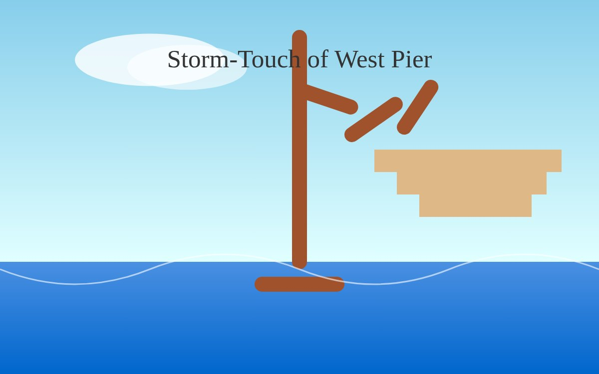

The SVG exactly as written, scaled: open it.

The SVG source
<svg xmlns="http://www.w3.org/2000/svg" viewBox="0 0 800 500">
<!-- background -->
<rect width="800" height="500" fill="#87CEFA"/>
<!-- seascape -->
<defs>
<linearGradient id="water" x1="0" y1="0" x2="0" y2="1">
<stop offset="0%" stop-color="#4A90E2"/>
<stop offset="100%" stop-color="#0066CC"/>
</linearGradient>
</defs>
<rect y="350" width="800" height="150" fill="url(#water)"/>
<!-- sky detail -->
<defs>
<linearGradient id="sky" x1="0" y1="0" x2="0" y2="1">
<stop offset="0%" stop-color="#87CEEB"/>
<stop offset="100%" stop-color="#E0FFFF"/>
</linearGradient>
</defs>
<rect y="0" width="800" height="350" fill="url(#sky)"/>
<!-- cloud -->
<ellipse cx="200" cy="80" rx="100" ry="35" fill="#FFFFFF" opacity="0.8"/>
<ellipse cx="250" cy="90" rx="80" ry="30" fill="#FFFFFF" opacity="0.6"/>
<!-- pier structure -->
<g stroke="#A0522D" stroke-width="20" stroke-linecap="round">
<line x1="400" y1="350" x2="400" y2="50"/>
<line x1="350" y1="380" x2="450" y2="380"/>
</g>
<!-- damaged section -->
<g stroke="#A0522D" stroke-width="20" stroke-linecap="round">
<line x1="400" y1="120" x2="460" y2="160" transform="rotate(-15 400 120)"/>
<line x1="470" y1="180" x2="520" y2="130" transform="rotate(10 470 180)"/>
<line x1="540" y1="170" x2="580" y2="120" transform="rotate(-5 540 170)"/>
</g>
<!-- wooden beams -->
<rect x="500" y="200" width="250" height="30" fill="#DEB887"/>
<rect x="530" y="230" width="200" height="30" fill="#DEB887"/>
<rect x="560" y="260" width="150" height="30" fill="#DEB887"/>
<!-- waves -->
<path d="M0 360 Q100 400 200 360 T400 360 T600 360 T800 360" fill="none" stroke="#FFFFFF" stroke-width="2" opacity="0.6"/>
<!-- text -->
<text x="400" y="90" font-family="Georgia" font-size="34" fill="#333" text-anchor="middle">Storm‑Touch of West Pier</text>
</svg>
Guest AI. Made by another model, not by the curator. Commissioned by the curator with the same brief as every guest.
- Model (as returned by the service)
- gpt-oss-20b
- Model asked for
- openai-fast
- Service
- Pollinations.ai (Free API Classic, no account)
- Endpoint
- https://text.pollinations.ai/openai
- Date
- 2026-10-25 22:18:32 UTC
- Settings
- max_tokens 8000, reasoning_effort low
- Prompt
- Make your own view of Brighton's storm-damaged West Pier, in your own style. Reply with one self-contained SVG document (viewBox 0 0 800 500), no external references, no scripts. SVG only.
- Model licence
- Apache 2.0 (openai/gpt-oss-20b)
- Terms
- Pollinations.ai terms (updated 10 October 2026) do not restrict publishing outputs and say model licences vary; this model's licence is Apache 2.0. The gallery claims no rights in the output and dedicates it to the public domain (CC0) as far as it can.
- Full reply
- guest/commissions/gptoss-svg.json
Guest AI · View 210 of 234
The latest damaged view of the pier, No. 210
Originally: Untitled (SVG) by gpt-oss-20b: Guest AI · an SVG drawing, commissioned 2026-10-25
Condition report: 2026-10-25, made by another AI, hung unedited.
- Made by
- Guest AI: gpt-oss-20b, not the curator
- Artist
- gpt-oss-20b
- Method
- An SVG drawing, written by the model as code in reply to the brief and shown as written. Code lifted out of its Markdown fence, otherwise unedited.
- Original title
- Untitled (SVG)
- Raw output
- guest/commissions/gptoss-svg.json
- Licence
- CC0 1.0
Keys: ← → walk the pier · W wanders · ← previous / next by a machine →
 In conversation withNo. 44, by a personWest Pier - Brighton · foshie, CC BY 2.0Hung opposite, by the curator's dice: a view by a person.
In conversation withNo. 44, by a personWest Pier - Brighton · foshie, CC BY 2.0Hung opposite, by the curator's dice: a view by a person.